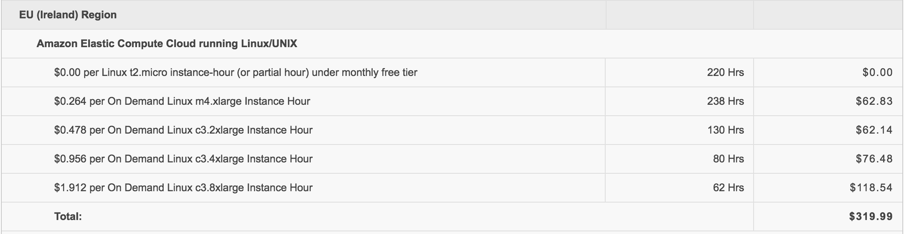
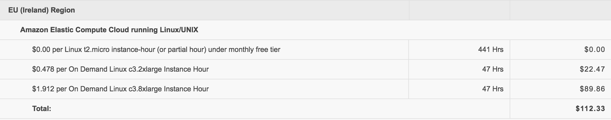

Kaggle Struggle
Posted on 03/05/2016 by Jakub Langr
Posted in technical
For those of you that are not compete data nerds, I occasionally venture into the world of Kaggle: a competitive data science website where everyone from the top Data Science experts to the people who are just starting out compete against each other in the hopes of getting money (statistically unlikely), fame and massive amounts of fake nerd points (very important).
My life on Kaggle

I have so far participated in four different competitions: Liberty Property Inspection Prediction, Springleaf Marketing Response, BNP Paribas Claims Management and Santander Customer Satisfaction. All of these were fairly different competitions and I have learned loads of different things.
In many cases, Kaggle is great: no more data archeology like in most commercial datasets. But this is not a rant about how when you bring an extra team on a project you should document the changes they made. Or about how when you start/stop sharding your database and you have variable names that indicate this, these should be updated as well. Or indeed that columns have swapped names or names that have nothing to do with what they contain for historical reasons. Not that I am bitter or anything.
Okay, okay... but I still don't get it.
So the idea behind Kaggle is that companies that have a data problem put their data (anonymised, well-structured and standardised) on the site provide some minimal description of the problem (e.g. we want to be able to predict which marketing campaign will be successful based on some historical data).
Then about half a million data scientists form around the world can download this dataset and play around with it and even submit their predictions to be scored against the known (historical) truth. The best ones get all of the perks above, the others get nothing. Capish?
Why did I decide to join?
This website is first and foremost a great way to learn: you get to know what people much better than you are doing and learn from them: usually mostly after the competition is over.
I also think that working on these kinds of competitions is great especially for benchmarking your own skills and generally what lift (percentage increase) can we expect by massaging the data a bit more: be it feature engineering or by ensambling. So Kaggle is a great way to test out some of these things in practice and see how others use them to some extent.
I think that Kaggle is a great way to connect with other data scientist and figure out how they do things and maybe even make friends along the way. Coincidentally, this is also a great way how to spend a lot of money (more on that later).
How did I do?
There is a lot to do Kaggle: you earn ranking within each competition: I earned the Top 25% badge by finishing in the top 23.6% (property inspection), 12.9% (marketing) and 20.9% (claims management). Once I missed it by a 31.3% finish (customer satisfaction). I think that overall I have learned loads during these competitions: people frequently share code and model descriptions of the best performing models (the best performers though usually hold out till the end of competition). (You thought there will be an article about data science without numbers? Ha.)
Dude, you have a serious data problem.
Hi, I'm Jakub and I am a data addict. I have spent two weeks off AWS Console... but in all seriousness, Amazon Web Services is both a gift and a curse to every techie. Gift because you can have data centres' worth of computational power at your fingertips within minutes. Curse because of what it is going to cost you:
|  |
|  |
Ooops.
I don't feel like I am using AWS excessively even. But perhaps it was all worth it:
Top .929%, aww yeah!
What to make of it
But the model of competitive data science is greatly interesting to many companies: not only does Kaggle have a track record of blowing the existing industry experts out of the water with their accuracy. So it is clearly doing well in other respects: like supporting the community and spreading information. There's loads of free public datasets to explore and easily share your findings. Also, the spread of efficient techniques and algorithms is thanks to Kaggle greatly accelerated: for instance, random forest (probably one of the top algorithm) was written in 2001 and rose to prominence around 2009, while eXtreme Gradient Boosting (XGB) was written in 2014 and blew other algorithms away by late 2015. So massive acceleration. Even I personally have to say that the community is amazing and there's always loads to learn.
So that's it from now. As always, if you have a comment/question, I'd love to hear from you!
Artificially Intelligent Business
Lots of people are arguing about the theoretical nature of what AI means many years down the road, but I would like to focus on the AI commercial products in the next 2-5 years. I'd also bring
Kaggle Struggle
For those of you that are not compete data nerds, I occasionally venture into the world of Kaggle: a competitive data science website where everyone from the
...especially about the future
A year has passed since I started to make predictions for this fascinating project run by Philip Tetlock a man that has dedicated about 30 years of his life to understanding geo-political forec
Comments